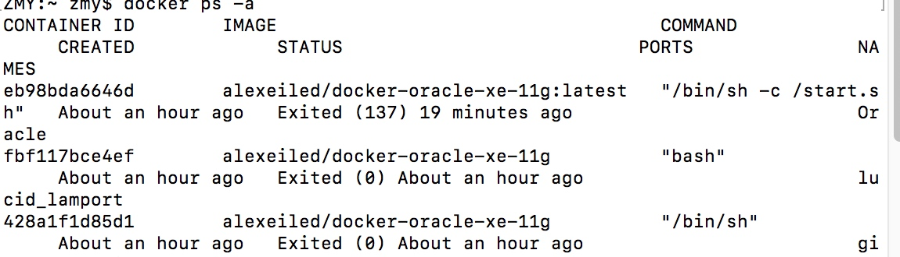

Mac下Docker的安装使用
1.什么是 docker
Docker，可以说是一个终端命令行的虚拟机，但更准确的说法，其实应该是一个虚拟环境。比如，你想要在PC上无缝使用Linux么？那么虚拟机并不是你唯一的出路，你还有Docker！我更愿意称Docker为一个容器，当然这只是Docker的一个狭义解释，Docker不止是一个容器。Docker包含3个重要概念：
一个，是镜像（Image），镜像是静态的、可以被用户互相分享的文件。我们玩过双系统和虚拟机的人都知道，首先你需要一个.iso镜像，才能安装系统。Docker中的镜像也是这个东西，镜像是静态的，你不能对他操作，只能pull别人的镜像或者push自己的镜像。
还有一个，是容器（Container），前面说过，镜像是静态不可操作的，只能被分享和下载，那什么是能被操作的呢？就是容器里！容器可以理解为镜像的动态状态，也就是我们虚拟机中系统装好后的状态，其实这么说是不对的，容器最符合的描述应该是Linux的iso文件的Live CD模式，比如我们玩双系统时都进入过Live CD模式，不安装系统而直接进入系统，很神奇是吧，Docker的容器就是这个概念，只不过更加轻量更加迅速便捷。但是Live CD的害处就是你关机后作出的修改安装的软件全部gg，容器也是一样，一旦被直接推出，之前安装的gcc啊vim啊啥的就会全部gg掉。如果要保存修改，就需要将当前容器封装成一个新的镜像，这样下次启动这个新的镜像后之前作出的修改还都在。
最后，是仓库（Repository）。各位在前面看到我写的pull和push什么的，有没有晕？不知道各位对于git熟悉不熟悉，Docker中的仓库很像git的代码仓库，你可以pull自己之前push到自己仓库的镜像到本地，也可以pull别人push到公共仓库的镜像到自己本地。说白了就是百度云盘，你可以上传（push）自己做好环境的Docker上去，也可以下载（pull）自己云端的镜像到本地。同时，我们知道百度云最大的特点就是分享（你懂的嘿嘿嘿），类比Docker，如果你得到百度云分享链接（别人的镜像名字、标签和别人的用户名），你还可以下载（pull）别人分享的镜像到自己的本地，别人也可以下载（pull）你的镜像，因为Docker仓库都是公共的。当然，每个免费用户有一个名额把自己的一个镜像设为私有，也就是禁止被分享给别人，类比百度云上你自己保存的而没有被生成分享链接的小姐姐。
作者：sgyzetrov
来源：CSDN
原文：https://blog.csdn.net/S_gy_Zetrov/article/details/78161154?utm_source=copy
版权声明：本文为博主原创文章，转载请附上博文链接！
2.安装 dockerbrew cask install
没有安装 brew 请先安装 brew
3.拉取自己需要的镜像(比如 Oracle)docker pull alexeiled/docker-oracle-xe-11g
4.拉取完成后，启动镜像docker run -h "oracle" --name "oracle" -d -p 49160:22 -p 49161:1521 -p 49162:8080 alexeiled/docker-oracle-xe-11g
每运行一次镜像都会启动一个容器,容器删除后，可以通过运行镜像再次获得，但是镜像删除后，就只能重新拉取了
-p 49160:22 -p 49161:1521 -p 49162:8080 这一段的意思是把 oracle 容器的1521，22，8080，端口都映射到本机的49160端口
5.命令介绍
1.docker ps 查看当前运行的容器 -a 查看所有的容器（包括关闭的）

2.docker exec -it eb98bda6646d /bin/bash 进入容器
eb98bda6646d这个是上一步查出来的容器 id
3.docker stop eb98bda6646d 停止正在运行的容器
4.docker start eb98bda6646d 重新启动已经停止的容器
5.docker rm eb98bda6646d 删除容器
6.docker images 查看所有镜像
7.docker rmi alexeiled/docker-oracle-xe-11g 删除 镜像
alexeiled/docker-oracle-xe-11g 镜像的名称